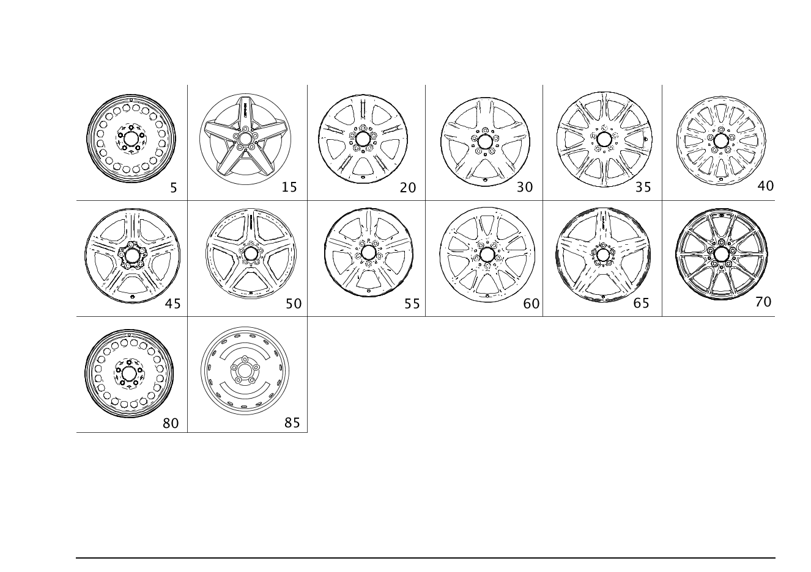

| № | Артикул | Название | Кол. | Примечание | Ограничение |
|---|---|---|---|---|---|
| 5 | A 169 400 06 02 | Дисковое колесо (DISK WHEEL) | 2 | СПЕРЕДИ И СЗАДИ; 6JX16/H2/ET46 [002869] СОБЛЮДАТЬ РУКОВОДСТВО ПО ВЫПОЛНЕНИЮ РАБОТ В WIS-NET#GF40.10-P-0804B# | M640+M20+643 |
| 5 | A 169 400 04 02 | Дисковое колесо (DISK WHEEL) | 2 | Передний мост; 6JX15/H2/ET44 [002869] СОБЛЮДАТЬ РУКОВОДСТВО ПО ВЫПОЛНЕНИЮ РАБОТ В WIS-NET#GF40.10-P-0804B# | R00 |
| 5 | A 169 400 06 02 | Дисковое колесо (DISK WHEEL) | 2 | Передний мост; 6JX16/H2/ET46 [002869] СОБЛЮДАТЬ РУКОВОДСТВО ПО ВЫПОЛНЕНИЮ РАБОТ В WIS-NET#GF40.10-P-0804B# | 643 |
| 5 | A 169 400 06 02 | Дисковое колесо (DISK WHEEL) | 2 | СПЕРЕДИ И СЗАДИ; 6JX16/H2/ET46 [002869] СОБЛЮДАТЬ РУКОВОДСТВО ПО ВЫПОЛНЕНИЮ РАБОТ В WIS-NET#GF40.10-P-0804B# | M640+M20+643 |
| 5 | A 169 400 06 02 | Дисковое колесо (DISK WHEEL) | 2 | Задний мост; 6JX16/H2/ET46 [002869] СОБЛЮДАТЬ РУКОВОДСТВО ПО ВЫПОЛНЕНИЮ РАБОТ В WIS-NET#GF40.10-P-0804B# | 643 |
| 5 | A 169 400 04 02 | Дисковое колесо (DISK WHEEL) | 2 | Задний мост; 6JX15/H2/ET44 [002869] СОБЛЮДАТЬ РУКОВОДСТВО ПО ВЫПОЛНЕНИЮ РАБОТ В WIS-NET#GF40.10-P-0804B# | R00 |
| 15 | A 169 401 11 02 | Колесо со спицами | 2 | СПЕРЕДИ И СЗАДИ; 7JX17/H2/ET49 [002869] СОБЛЮДАТЬ РУКОВОДСТВО ПО ВЫПОЛНЕНИЮ РАБОТ В WIS-NET#GF40.10-P-0804B# | 768 |
| 15 | A 169 401 11 02 | Колесо со спицами | 2 | СПЕРЕДИ И СЗАДИ; 7JX17/H2/ET49 [002869] СОБЛЮДАТЬ РУКОВОДСТВО ПО ВЫПОЛНЕНИЮ РАБОТ В WIS-NET#GF40.10-P-0804B# | 768 |
| 20 | A 169 401 02 02 | Дисковое колесо | 2 | СПЕРЕДИ И СЗАДИ; 6JX16/H2/ET46 [002869] СОБЛЮДАТЬ РУКОВОДСТВО ПО ВЫПОЛНЕНИЮ РАБОТ В WIS-NET#GF40.10-P-0804B# | 672 |
| 20 | A 169 401 02 02 | Дисковое колесо | 2 | СПЕРЕДИ И СЗАДИ; 6JX16/H2/ET46 [002869] СОБЛЮДАТЬ РУКОВОДСТВО ПО ВЫПОЛНЕНИЮ РАБОТ В WIS-NET#GF40.10-P-0804B# | 672 |
| 20 | A 169 401 02 02 | Дисковое колесо | 2 | СПЕРЕДИ И СЗАДИ; 6JX16/H2/ET46 [002869] СОБЛЮДАТЬ РУКОВОДСТВО ПО ВЫПОЛНЕНИЮ РАБОТ В WIS-NET#GF40.10-P-0804B# | R58 |
| 20 | A 169 401 02 02 | Дисковое колесо | 2 | СПЕРЕДИ И СЗАДИ; 6JX16/H2/ET46 [002869] СОБЛЮДАТЬ РУКОВОДСТВО ПО ВЫПОЛНЕНИЮ РАБОТ В WIS-NET#GF40.10-P-0804B# | R58 |
| 20 | A 169 401 32 02 | Дисковое колесо | 2 | СПЕРЕДИ И СЗАДИ; 7JX17/H2/ET49 [002869] СОБЛЮДАТЬ РУКОВОДСТВО ПО ВЫПОЛНЕНИЮ РАБОТ В WIS-NET#GF40.10-P-0804B# | R48 |
| 20 | A 169 401 32 02 | Дисковое колесо | 2 | СПЕРЕДИ И СЗАДИ; 7JX17/H2/ET49 [002869] СОБЛЮДАТЬ РУКОВОДСТВО ПО ВЫПОЛНЕНИЮ РАБОТ В WIS-NET#GF40.10-P-0804B# | R48 |
| 30 | A 169 401 03 02 | Дисковое колесо | 2 | СПЕРЕДИ И СЗАДИ; 6JX16/H2/ET46 [002869] СОБЛЮДАТЬ РУКОВОДСТВО ПО ВЫПОЛНЕНИЮ РАБОТ В WIS-NET#GF40.10-P-0804B# | R23 |
| 30 | A 169 401 03 02 | Дисковое колесо | 2 | СПЕРЕДИ И СЗАДИ; 6JX16/H2/ET46 [002869] СОБЛЮДАТЬ РУКОВОДСТВО ПО ВЫПОЛНЕНИЮ РАБОТ В WIS-NET#GF40.10-P-0804B# | R23 |
| 35 | A 169 401 07 02 | Дисковое колесо | 2 | СПЕРЕДИ И СЗАДИ; 7JX17/H2/ET49 [002869] СОБЛЮДАТЬ РУКОВОДСТВО ПО ВЫПОЛНЕНИЮ РАБОТ В WIS-NET#GF40.10-P-0804B# | R43 |
| 35 | A 169 401 07 02 | Дисковое колесо | 2 | СПЕРЕДИ И СЗАДИ; 7JX17/H2/ET49 [002869] СОБЛЮДАТЬ РУКОВОДСТВО ПО ВЫПОЛНЕНИЮ РАБОТ В WIS-NET#GF40.10-P-0804B# | R43 |
| 40 | A 169 401 13 02 | Дисковое колесо | 2 | СПЕРЕДИ И СЗАДИ; 6JX16/H2/ET46 [002869] СОБЛЮДАТЬ РУКОВОДСТВО ПО ВЫПОЛНЕНИЮ РАБОТ В WIS-NET#GF40.10-P-0804B# | R79 |
| 40 | A 169 401 13 02 | Дисковое колесо | 2 | СПЕРЕДИ И СЗАДИ; 6JX16/H2/ET46 [002869] СОБЛЮДАТЬ РУКОВОДСТВО ПО ВЫПОЛНЕНИЮ РАБОТ В WIS-NET#GF40.10-P-0804B# | R79 |
| 45 | A 169 400 09 02 | Дисковое колесо | 2 | СПЕРЕДИ И СЗАДИ; 7JX17/H2/ET49 [002869] СОБЛЮДАТЬ РУКОВОДСТВО ПО ВЫПОЛНЕНИЮ РАБОТ В WIS-NET#GF40.10-P-0804B# | R57 |
| 45 | A 169 400 09 02 | Дисковое колесо | 2 | СПЕРЕДИ И СЗАДИ; 7JX17/H2/ET49 [002869] СОБЛЮДАТЬ РУКОВОДСТВО ПО ВЫПОЛНЕНИЮ РАБОТ В WIS-NET#GF40.10-P-0804B# | R57 |
| 50 | A 169 401 16 02 | Колесо со спицами | 2 | СПЕРЕДИ И СЗАДИ; 7JX18/H2/ET49 [002869] СОБЛЮДАТЬ РУКОВОДСТВО ПО ВЫПОЛНЕНИЮ РАБОТ В WIS-NET#GF40.10-P-0804B# | 791 |
| 50 | A 169 401 16 02 | Колесо со спицами | 2 | СПЕРЕДИ И СЗАДИ; 7JX18/H2/ET49 [002869] СОБЛЮДАТЬ РУКОВОДСТВО ПО ВЫПОЛНЕНИЮ РАБОТ В WIS-NET#GF40.10-P-0804B# | 791 |
| 55 | A 169 401 22 02 | Дисковое колесо (DISK WHEEL) | 2 | Передний мост; 6JX16/H2/ET46 [002869] СОБЛЮДАТЬ РУКОВОДСТВО ПО ВЫПОЛНЕНИЮ РАБОТ В WIS-NET#GF40.10-P-0804B# | R78 |
| 55 | A 169 401 22 02 | Дисковое колесо (DISK WHEEL) | 2 | Задний мост; 6JX16/H2/ET46 [002869] СОБЛЮДАТЬ РУКОВОДСТВО ПО ВЫПОЛНЕНИЮ РАБОТ В WIS-NET#GF40.10-P-0804B# | R78 |
| 60 | A 169 401 26 02 | Дисковое колесо | 2 | СПЕРЕДИ И СЗАДИ; 7JX17/H2/ET49 [002869] СОБЛЮДАТЬ РУКОВОДСТВО ПО ВЫПОЛНЕНИЮ РАБОТ В WIS-NET#GF40.10-P-0804B# | 25R |
| 60 | A 169 401 26 02 | Дисковое колесо | 2 | СПЕРЕДИ И СЗАДИ; 7JX17/H2/ET49 [002869] СОБЛЮДАТЬ РУКОВОДСТВО ПО ВЫПОЛНЕНИЮ РАБОТ В WIS-NET#GF40.10-P-0804B# | 25R |
| 65 | A 169 401 25 02 | Дисковое колесо | 2 | СПЕРЕДИ И СЗАДИ; 7JX17/H2/ET49 [002869] СОБЛЮДАТЬ РУКОВОДСТВО ПО ВЫПОЛНЕНИЮ РАБОТ В WIS-NET#GF40.10-P-0804B# | R11 |
| 65 | A 169 401 25 02 | Дисковое колесо | 2 | СПЕРЕДИ И СЗАДИ; 7JX17/H2/ET49 [002869] СОБЛЮДАТЬ РУКОВОДСТВО ПО ВЫПОЛНЕНИЮ РАБОТ В WIS-NET#GF40.10-P-0804B# | R11 |
| 65 | A 169 401 25 02 | Дисковое колесо | 2 | СПЕРЕДИ И СЗАДИ; 7JX17/H2/ET49 [002869] СОБЛЮДАТЬ РУКОВОДСТВО ПО ВЫПОЛНЕНИЮ РАБОТ В WIS-NET#GF40.10-P-0804B# | R11+651 |
| 65 | A 169 401 25 02 | Дисковое колесо | 2 | СПЕРЕДИ И СЗАДИ; 7JX17/H2/ET49 [002869] СОБЛЮДАТЬ РУКОВОДСТВО ПО ВЫПОЛНЕНИЮ РАБОТ В WIS-NET#GF40.10-P-0804B# | R11+651 |
| 70 | A 169 401 27 02 | Дисковое колесо | 2 | Передний мост; 6JX16/H2/ET46 [002869] СОБЛЮДАТЬ РУКОВОДСТВО ПО ВЫПОЛНЕНИЮ РАБОТ В WIS-NET#GF40.10-P-0804B# | 39R |
| 70 | A 169 401 30 02 | Дисковое колесо | 2 | СЗАДИ; 6JX16/H2/ET31 [002869] СОБЛЮДАТЬ РУКОВОДСТВО ПО ВЫПОЛНЕНИЮ РАБОТ В WIS-NET#GF40.10-P-0804B# | 39R |
| 80 | A 169 400 06 02 | Дисковое колесо (DISK WHEEL) | 1 | ЗАПАСНОЕ КОЛЕСО; 6JX16/H2/ET46 | (M266+M20/M266+M20+M002/M640+M20)+669 |
| 85 | A 169 400 08 02 | Дисковое колесо (DISK WHEEL) | 1 | ДИСК ЗАПАСНОГО КОЛЕСА; 3,5BX16/H2/ET32 | 690 |
| 90 | A 169 400 04 25 | Колпак колеса (HUB CAP) | 4 | 15" | -(25R/672) |
| 90 | A 169 400 11 25 | Колпак колеса (HUB CAP) | 4 | 15" | -(25R/672) |
| 90 | A 169 400 05 25 | Колпак колеса (HUB CAP) | 4 | 16" | 643 |
| 90 | A 169 400 12 25 | Колпак колеса (HUB CAP) | 4 | 16" | 643 |
| 100 | A 171 400 00 25 | Крышка ступицы колеса | 4 | R23/R43/R78/R79/25R/39R/R11/672 | |
| 100 | A 220 400 01 25 | Крышка ступицы колеса | 4 | (808/809)+(768/791) | |
| 100 | A 220 400 01 25 | Крышка ступицы колеса | 4 | R20/R23/R27/R28/R29/R30/R43/R58/R74/603/672/R79/768/791 | |
| 100 | A 171 400 00 25 | Крышка ступицы колеса | 4 | 768/791/(768/791)+800 | |
| 105 | A 169 400 07 25 | Колпак колеса | 4 | R57 | |
| 110 | A 211 401 03 70 | Винт со сфер. буртиком (SPHERICAL COLLAR SCREW) | 20 | M14 X 1.5 X30,7 | |
| 110 | A 000 990 49 07 | Винт со сфер. буртиком (SPHERICAL COLLAR SCREW) | 20 | M14X1,5X30,7 | |
| 120 | A 000 400 03 13 | Вентиль шины (TIRE VALVE) | 2 | ||
| 120 | A 000 400 03 13 | Вентиль шины (TIRE VALVE) | 2 | ||
| 120 | A 000 400 29 13 | Вентиль шины (TIRE VALVE) | 1 | 690 | |
| 120 | A 000 400 03 13 | Вентиль шины (TIRE VALVE) | 1 | 669 | |
| 120 | A 000 400 02 13 | Вентиль шины (TIRE VALVE) | 2 | R06/R20/R23/R27/R28/R29/R30/R43/R57/R74/R78/603/672/R79/768/791 | |
| 120 | A 000 400 02 13 | Вентиль шины (TIRE VALVE) | 2 | R06/R20/R23/R27/R28/R29/R30/R43/R57/R74/R78/603/672/R79/768/791 | |
| 125 | N 007757 008600 | - Колпачок вентиля (VALVE CAP) | 2 | ||
| 125 | N 007757 008600 | - Колпачок вентиля (VALVE CAP) | 2 | ||
| 130 | A 001 401 27 13 | Клапан (VALVE) | 2 | СИСТЕМА КОНТРОЛЯ ДАВЛЕНИЯ ВОЗДУХА В ШИНАХ (RDK) | 768+(475/475+494) |
| 130 | A 001 401 27 13 | Клапан (VALVE) | 2 | СИСТЕМА КОНТРОЛЯ ДАВЛЕНИЯ ВОЗДУХА В ШИНАХ (RDK) | 768+(475/475+494) |
| 140 | A 000 401 06 09 | - Защитный колпачок (PROTECTIVE CAP) | 2 | СИСТЕМА КОНТРОЛЯ ДАВЛЕНИЯ ВОЗДУХА В ШИНАХ (RDK) | 768+(475/475+494) |
| 140 | A 000 401 06 09 | - Защитный колпачок (PROTECTIVE CAP) | 2 | СИСТЕМА КОНТРОЛЯ ДАВЛЕНИЯ ВОЗДУХА В ШИНАХ (RDK) | 768+(475/475+494) |
| 180 | A 000 581 00 45 | КРЮК ДЛЯ СНЯТИЯ | 1 | КОЛПАК КОЛЕСА | R57 |
| 270 | A 171 401 27 94 | Балансировочный грузик (BALANCING WEIGHT) | NB | 5 GRAMM | |
| 270 | A 171 401 28 94 | Балансировочный грузик (BALANCING WEIGHT) | NB | 10 GRAMM | |
| 270 | A 171 401 29 94 | Балансировочный грузик (BALANCING WEIGHT) | NB | 15 GRAMM | |
| 270 | A 171 401 14 94 | Балансировочный грузик (BALANCING WEIGHT) | NB | 20 GRAMM | |
| 270 | A 171 401 15 94 | Балансировочный грузик (BALANCING WEIGHT) | NB | 25 GRAMM | |
| 270 | A 171 401 16 94 | Балансировочный грузик (BALANCING WEIGHT) | NB | 30 GRAMM | |
| 270 | A 171 401 17 94 | Балансировочный грузик (BALANCING WEIGHT) | NB | 35 GRAMM | |
| 270 | A 171 401 18 94 | Балансировочный грузик (BALANCING WEIGHT) | NB | 40 GRAMM | |
| 270 | A 171 401 19 94 | Балансировочный грузик (BALANCING WEIGHT) | NB | 45 GRAMM | |
| 270 | A 171 401 20 94 | Балансировочный грузик (BALANCING WEIGHT) | NB | 50 GRAMM | |
| 270 | A 171 401 21 94 | Балансировочный грузик (BALANCING WEIGHT) | NB | 55 GRAMM | |
| 270 | A 171 401 22 94 | Балансировочный грузик (BALANCING WEIGHT) | NB | 60 GRAMM | |
| 272 | A 126 401 08 28 | Удерживающая пружина (RETAINING SPRING) | NB | СТАЛЬН. КОЛЕСН. ДИСК | |
| 272 | A 124 401 07 28 | Удерживающая пружина (RETAINING SPRING) | NB | АЛЮМИН. КОЛЕСН. ДИСК | |
| 275 | A 171 401 01 94 | Балансировочный грузик (BALANCING WEIGHT) | NB | ПРИКЛЕЕННОЕ ИСПОЛНЕНИЕ; 5 GRAMM | |
| 275 | A 171 401 02 94 | Балансировочный грузик (BALANCING WEIGHT) | NB | ПРИКЛЕЕННОЕ ИСПОЛНЕНИЕ; 10 GRAMM | |
| 275 | A 171 401 03 94 | Балансировочный грузик (BALANCING WEIGHT) | NB | ПРИКЛЕЕННОЕ ИСПОЛНЕНИЕ; 15 GRAMM | |
| 275 | A 171 401 04 94 | Балансировочный грузик (BALANCING WEIGHT) | NB | ПРИКЛЕЕННОЕ ИСПОЛНЕНИЕ; 20 GRAMM | |
| 275 | A 171 401 05 94 | Балансировочный грузик (BALANCING WEIGHT) | NB | ПРИКЛЕЕННОЕ ИСПОЛНЕНИЕ; 25 GRAMM | |
| 275 | A 171 401 06 94 | Балансировочный грузик (BALANCING WEIGHT) | NB | ПРИКЛЕЕННОЕ ИСПОЛНЕНИЕ; 30 GRAMM | |
| 275 | A 171 401 07 94 | Балансировочный грузик (BALANCING WEIGHT) | NB | ПРИКЛЕЕННОЕ ИСПОЛНЕНИЕ; 35 GRAMM | |
| 275 | A 171 401 08 94 | Балансировочный грузик (BALANCING WEIGHT) | NB | ПРИКЛЕЕННОЕ ИСПОЛНЕНИЕ; 40 GRAMM | |
| 275 | A 171 401 09 94 | Балансировочный грузик (BALANCING WEIGHT) | NB | ПРИКЛЕЕННОЕ ИСПОЛНЕНИЕ; 45 GRAMM | |
| 275 | A 171 401 10 94 | Балансировочный грузик | NB | ПРИКЛЕЕННОЕ ИСПОЛНЕНИЕ; 50 GRAMM | |
| 275 | A 171 401 11 94 | Балансировочный грузик (BALANCING WEIGHT) | NB | ПРИКЛЕЕННОЕ ИСПОЛНЕНИЕ; 55 GRAMM | |
| 275 | A 171 401 12 94 | Балансировочный грузик (BALANCING WEIGHT) | NB | ПРИКЛЕЕННОЕ ИСПОЛНЕНИЕ; 60 GRAMM |
Позиций: 86 · подписано на схемах: 86 · колесо — плавный зум в курсор, перетаскивание — пан, двойной клик — зум, клик по артикулу — скопировать.